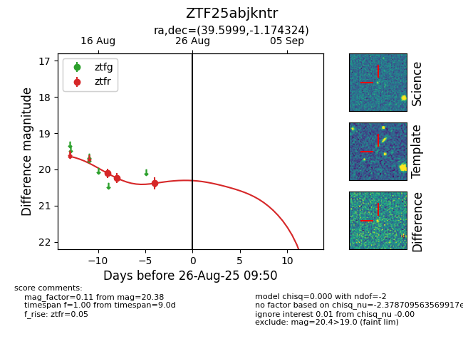

Target ZTF25abjkntr at 2025-08-26 09:50, see:
FINK: fink-portal.org/ZTF25abjkntr
Lasair: lasair-ztf.lsst.ac.uk/objects/ZTF25abjkntr
ALeRCE: alerce.online/object/ZTF25abjkntr
alt names
ZTF25abjkntr (ztf,fink)
coordinates:
equatorial (ra, dec) = (39.5999,-1.17432)
galactic (l, b) = (172.0889,-53.51243)
photometry
last ztfr=20.38
3 ztfr detections
